Mecidiye Camii
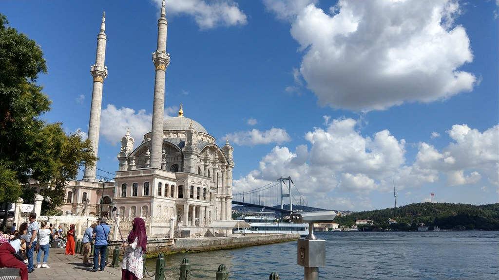
AçıklamaBüyük Mecidiye ya da halk arasında daha yaygın kullanılan adıyla Ortaköy Camii, gerek zarif mimarisi gerekse de tarihi önemi ile gezginlerin gözünde İstanbul gezilecek yerler listesine alınabilecek en güzel yapılar arasında olmayı sürdürüyor.Güneşli bir günde Ortaköy’e akın edenlerin hayranlıkla baktığı camii, gerçekten de dönemine özgü detayları başarıyla yansıtıyor.
Zaten yapı, dış kısmına benzersiz görünüm kazandıran taş oyma ve kabartma süslemeleri ile dikkatleri üzerine topluyor. İnşa sürecinde, bu görünümü destekleyecek şekilde beyaz kesme taş kullanılmış. Asırlara meydan okuyan dini yapının, tek şerefeli ve en az kendisi kadar ince detaylarla bezeli iki minaresi bulunuyor. Balyan, caminin iç kısmında ise farklı teknikler uygulayarak yine oldukça hoş görünüm elde etmiş. Mermer kaplı mihrabın nişi, empire üslubunun inceliklerini yansıtırken köşe dolgularında bitki motifleri, bordüründe ise geometrik şekiller göz çarpıyor. Yine mermerden yapılma minbere odaklandığınızda ise pembe renkli taşlarla süslü olduğu görebilirsiniz. Büyük Mecidiye Camii’nin iç kısmında uygulanan sıva tekniği sayesinde ayrıca ilk bakışta duvarların sanki kırmızı ve beyaz hareli taşlarla kaplandığını düşündürecek bir görünüm sağlanmış. Ortakoy Camii Büyük Mecidiye Camii içi Asırlardan beri Boğaziçi’ne güzellik katan Ortaköy Camii, 19. yüzyılda Osmanlı sultanları tarafından inşa ettirilen çoğu türdeşi gibi harim ve hünkâr kasrı olmak üzere iki bölümden oluşuyor. Selâtin camilerinin tipik bir özelliği olarak hünkâra ayrılmış özel alan, girişin hemen önünde konumlandırılmış. Bunun dışında yapının doğu ve batı cephelerini kapsayan her iki bölüm de birbirleriyle eşit ölçülerde, kare şeklinde tasarlanmış. Kadınların kullanımına yönelik harim bölümü, iç süslemeleri sayesinde yapının en dikkat çekici bölümleri arasında gösteriliyor. Hünkâr kasrında ise sadelik göze çarpıyor. Ancak bu bölüme çıkılan merdivenin gösterişli yapısı bu durumu bence fazlasıyla dengelenmiş. Osmanlı’nın son dönemlerinden günümüze ulaşan en önemli mimari eserlerden biri olan Büyük Mecidiye Camii, giriş kapısında yer alan kitabeye göre 1853 yılında Sultan Abdülmecid’in emri doğrultusunda inşa edilmiş. Öncesindeyse aynı alan üzerinde Vezir İbrahim Paşa’nın damadı Mahmut Ağa tarafından yaptırılan bir mescit bulunuyormuş. Ancak bu yapı, Patrona Halil İsyanı sırasında çıkan olaylar sonucunda tamamen kullanılamayacak hale gelmiş. Dolmabahçe Sarayı, Beykoz Kasrı, Edirne Meriç Köprüsü gibi eserlerin yapılmasında da payı olan Sultan Abdülmecid, yalnızca caminin inşa emrini vermekle yetinmemiş. Tıpkı babası gibi yenilik yanlısı tavrıyla dikkat çeken padişah, hat sanatındaki ustalığını konuşturarak caminin iç tasarımına farklı boyut katan “Çeharyar-ı Güzin” levhaları bizzat hazırlamış. Dört halifenin isminin yazılı olduğu bu levhalar dışında kalan diğer kalem işlerinde ise Ali Haydar Bey’in imzası bulunuyor. Ortakoy Camii Büyük Mecidiye Camii ne zaman yapıldı Tarihsel açıdan bakıldığında Ortaköy Camii, İstanbul’un başına gelen birçok olayda seyirci konumunda kalmış. Ancak hazır geçmişini anlatıyorken yapısal özelliklerini değişmesine neden olan bazı dönüm noktalarının altını çizmek gerektiğini düşünüyorum. Yapımının ardından Ortaköy Camii’nin statik açıdan bir hayli narin yapılı olduğu anlaşılmış. Bunun üzerine 1862’de yapıya yönelik ilk güçlendirme çalışması gerçekleştirilmiş. Galiba bu çalışma yeterli görülmemiş olacak ki sadece dört yıl sonra cami tekrar onarımdan geçirilmiş. Cami, 1894 yılında gerçekleşen ve kayıtlara İstanbul’un yaşadığı en büyük felaketlerden biri olarak geçen deprem nedeniyle ağır hasar görmüş. Bunun üzerine vakıf kurumlarından sorumlu Evkaf’ı Hümayun Nezareti gözetiminde kapsamlıca tamire alınmış. 1909 yılında gerçekleştirilen çalışmalar, aynı zamanda yapının orijinal görünümünü belli oranda kaybetmesine neden olmuş. Örneğin, deprem esnasında yıkılan yivli minareler, yivsiz olarak yenilenmiş. Ayrıca petek ve külah kısımlarında da değişiklikler yapılmış. 1960’larda zeminde meydana gelen göçmeler nedeniyle çatlaklar oluşunca, cami önce ibadete kapatılmış sonra da kubbesinde değişiklikleri kapsayan restorasyon çalışmalarına başlanmış. Benzer şekilde 1984’teki yangının ardından yapılan onarım süreci, Ortaköy Camii’nin orijinal görünümünden bir nebze daha uzaklaşmasına neden olmuş. Büyük Mecidiye Camii, Ortaköy İskele Meydanı’nın kuzey tarafında yer alıyor. Boğaz’a doğru uzanan küçük bir burnun üzerinde yükselen zarif camiye, farklı toplu taşıma seçeneklerini kullanarak rahatça ulaşabilirsiniz. Tabii bu seçenekleri sıralamadan önce caminin Beşiktaş Meydanı’na yakın konumda olduğu belirtmek istiyorum. Dolayısıyla meydandan yürüyerek ortalama 20 dakikada tarihi yapının bulunduğu noktaya gidebilirsiniz. Camiyi ziyaret için yolculuğa Avrupa Yakası’ndan başlayacaksanız, öncelikle vapurla Beşiktaş İskelesi’ne ulaşmanız gerekiyor. Ardındansa dilerseniz yürüyebilir ya da Bahçeşehir Üniversitesi durağından 22, 22RE, 25E, 40T, 42T numaralı otobüslere binip Ortaköy durağında inebilirsiniz. Taksim yönünden ayrıca DT1 numaralı araçlar da camiye kolay ulaşım olanağı sunuyor. Durak ile cami arasında yalnızca 1-2 dakikalık yürüme mesafesi bulunuyor. Ortakoy Camii Büyük Mecidiye Camii açılış saatleri Mimari güzelliği ve manzarası sayesinde her daim ilgi odağı olan Ortaköy Camii’ni, her gün09.00-18.00 saatleri arasında ziyaret edebilirsiniz. Camiye yalnızca namaz saatlerinde ziyaretçi kabul edilmiyor. Kudretli dini yapıyı detaylıca tanımak isteyen ziyaretçilerden herhangi bir ücret talep edilmiyor. Ancak gün içerisinde sık sık dini sorumluluklarını yerine getirmek isteyen bireyleri ağırladığından, hem giyiminize özen göstermeniz hem de sessiz olmanız bekleniyor. Ortaköy Camii Yakınında Ziyaret Edilebilecek Diğer Önemli Yapılar Seyahat programınıza bağlı olarak gezi listenizde Büyük Mecidiye Camii’ne ek olarak aşağıda sıraladığım yapılara yer verebilirsiniz. Böylece hem kent hem de ülke tarihi hakkında bilgi dağarcığınızı daha da genişletme fırsatı bulabilirsiniz. Yahya Efendi Türbesi Çırağan Sarayı’nın tam karşısında yer alan Yahya Efendi Türbesi, 1571 yılında Mimar Sinan gözetiminde inşa edilmiş. II. Selim’in emri doğrultusunda yapımı gerçekleştirilen ahşap türbe, kalem işi süslemeleriyle dikkat çekiyor. İstanbul’un en güzel yeşil alanlarından biri konumundaki Yıldız Parkı’nın bitişiğindeki tarihi yapıyı ziyaretiniz esnasında Kanuni Sultan Süleyman döneminin ünlü âliminin ebedi istirahatgahına ek olarak birçok mezar görebilirsiniz. Bunlar, Yahya Efendi’ye saygı duyan bireylere aitmiş. Etrafa dikkatlice bakarsanız, hanedan mensuplarına ait olanları hemen fark edebilirsiniz.
|
| 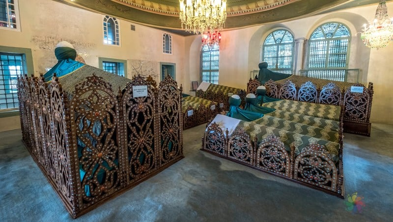 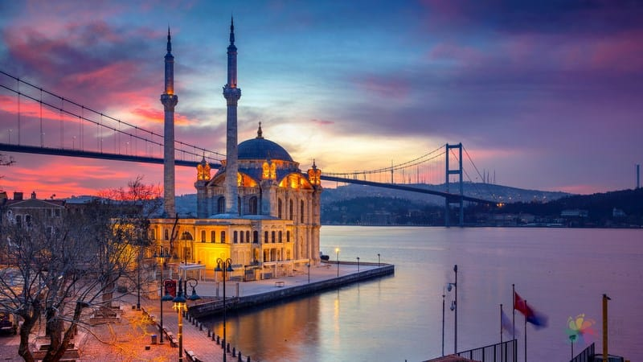 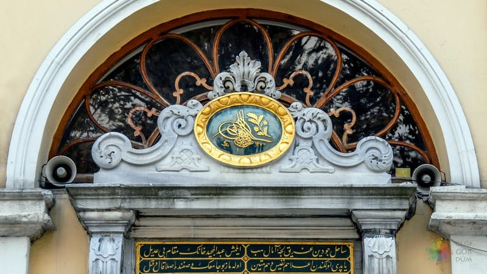 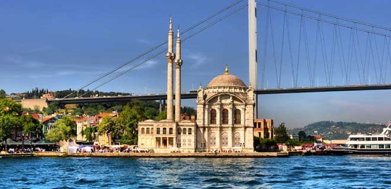 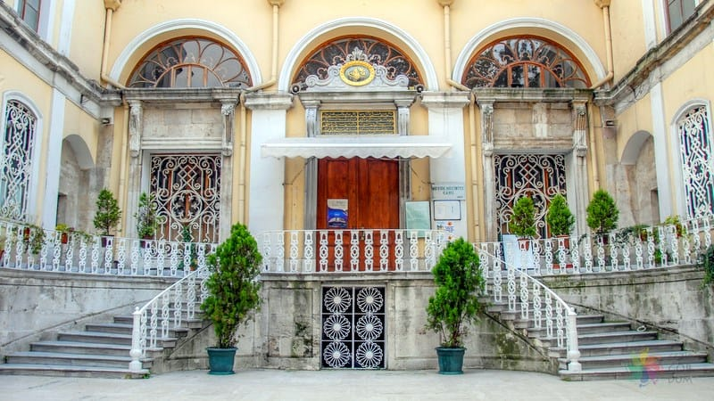 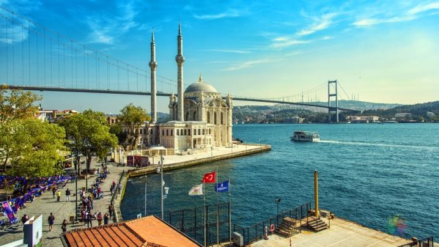 |
| 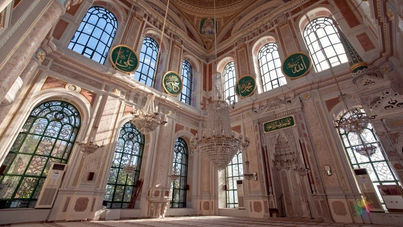 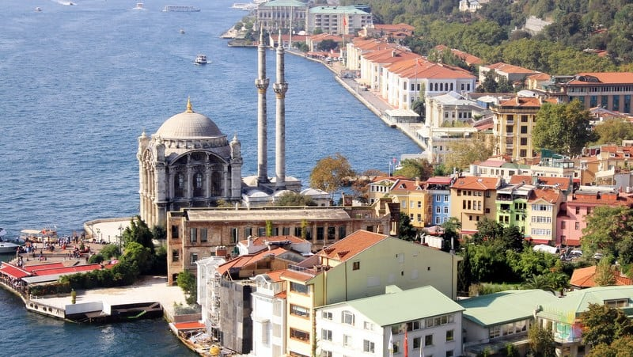 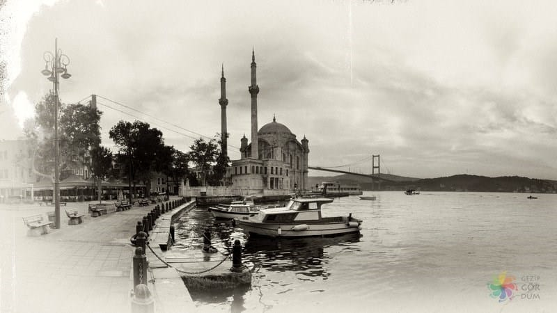 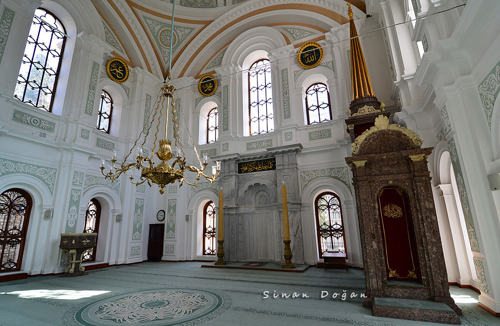 |
|
Açılış tarihi: 1856 Mimari tarz: Neo-Barok Temel atma tarihi: 1853 Mimarlar: Nigoğos Balyan, Garabet Amira Balyan |
|
|
Adres: Mecidiye, Mecidiye Köprüsü Sk. No:1 D:1, 34347 Beşiktaş/İstanbul |
|
|
Kapalı Günler Yok |